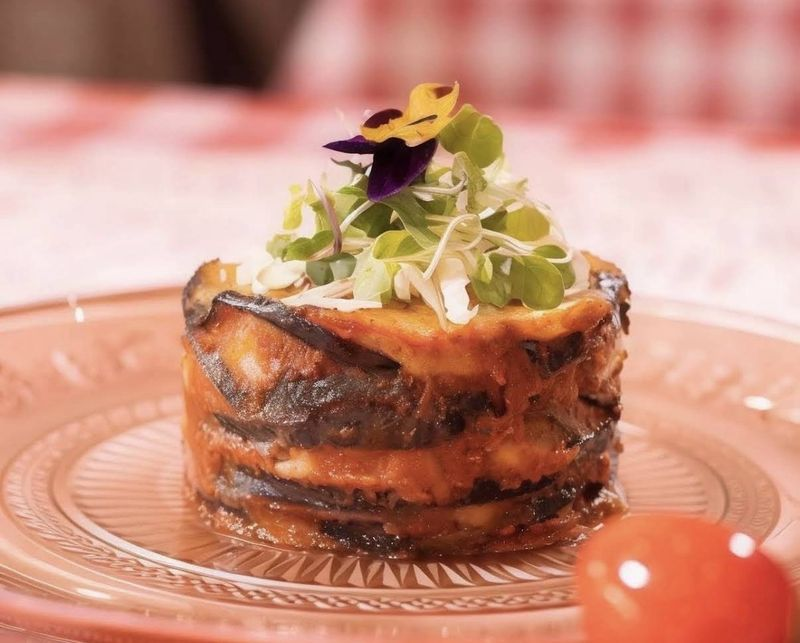
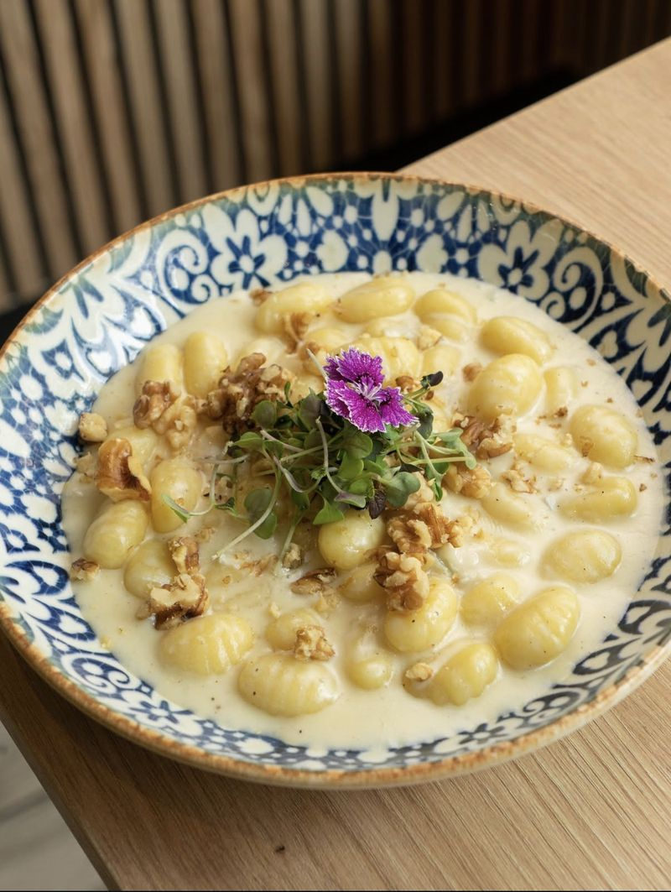

Pizza del mes
Base de patata, speck y patata crunchy.
Pizzería napolitana · Teatinos, Málaga
Masa montada a mano, borde alto y aireado, y pasta que se termina en la rueda de parmesano. En el Bulevar Louis Pasteur, en Teatinos-Universidad.
Pendiente

Cada mes cambian una pizza y una pasta. Estas son las de noviembre.
Base de patata, speck y patata crunchy.

Pappardelle, speck y crema de porcini, terminados dentro de la rueda de parmesano.
Algunos de los platos que salen de la cocina. Pendiente

Con brotes y flores comestibles.

Rúcula, salmón ahumado y cebolla morada.

Guanciale, yema y queso rallado.

Salsa cremosa, nueces y brotes.

Cada base se monta a mano sobre la encimera de granito. Así sale el borde alto y aireado de la pizza napolitana.

La pizza entra en un horno que lleva «Da Mimì» grabado en la placa.

Algunas pastas se terminan dentro de la rueda de parmesano.
«Producto 100% italiano» Pendiente
Blvr. Louis Pasteur, 15
Teatinos-Universidad, 29010 Málaga
951 70 55 35 Pendiente
Pendiente
| Lunes a jueves | 13:00–16:00 y 19:30–23:30 |
|---|---|
| Viernes | 13:00–16:00 y 19:30–00:00 |
| Sábado | 13:00–16:30 y 19:30–00:00 |
| Domingo | 13:00–16:30 y 19:30–23:30 |